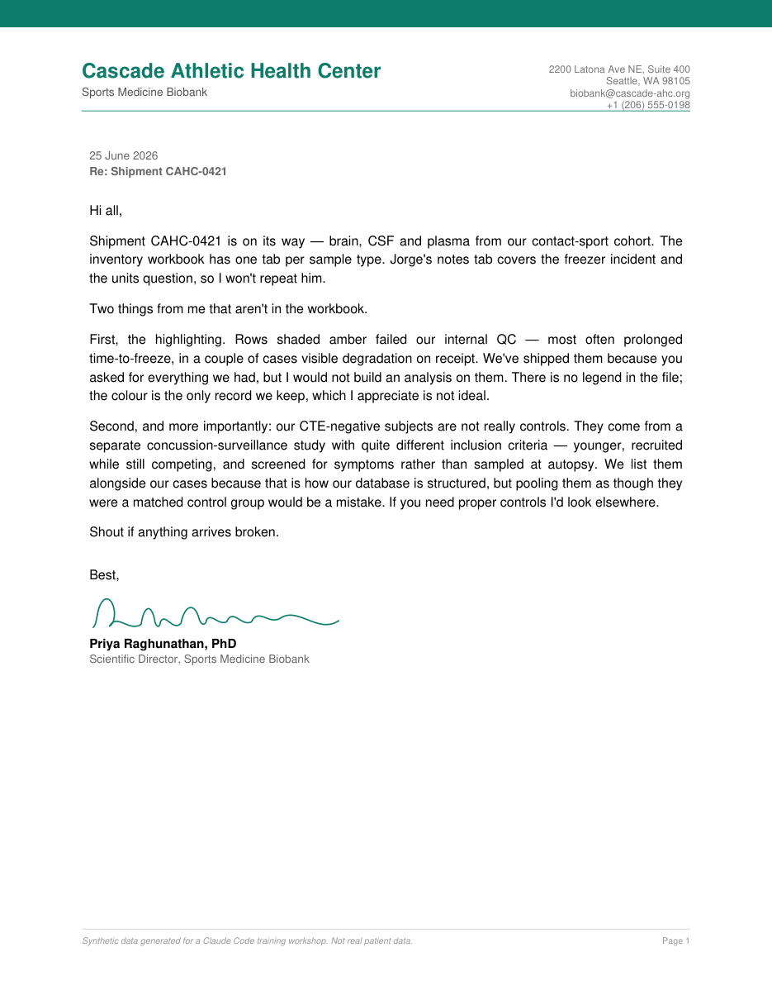

Data cleanup
and visualization
Session 3
Lauren Fields & Chris Hsu
Claude Code Workshop · Day 1 · 10:30–12:00
WASHINGTON
Overview
- Metadata fundamentals What is metadata? Common harmonization challenges
- Example metadata cleanup Standardize variables, units, and codes Document decisions using Claude Code
- Visualization and reporting Identify missingness and potential confounders Produce a reproducible HTML report
What is metadata?
- Context that makes a measurement interpretable
- Subject, sample, collection, processing, conditions
- Sources: sample sheets, case manifests, clinical variables, run records
- Determines how data is grouped and compared
- Errors propagate downstream
Examples of metadata
Human patient
| Age | Sex | Diagnosis | Tissue | Post-mortem interval | CSF p-tau (pg/mL) |
|---|---|---|---|---|---|
| 67 years | M | CTE | DLPFC | 12.5 h | 412 |
| 54 years | F | Control | Hippocampus | 8.0 h | N/A |
| 72 years | M | CTE | DLPFC | 22.4 h | 0 |
| 61 years | F | Control | Amygdala | 15.7 h | N/A |
scRNA-seq
| Cell barcode | Cell type | Genes detected | UMI count | Mitochondrial % | Spike-in reads |
|---|---|---|---|---|---|
| AACGTTGCAGT-1 | CD8⁺ T cell | 2,145 | 6,780 | 3.2 % | 0 |
| GGTCAACTGCA-1 | B cell | 1,876 | 5,204 | 2.8 % | N/A |
| TTGCAAGGTCA-1 | NK cell | 2,530 | 8,112 | 4.1 % | 128 |
| CCATGGTACAA-1 | Monocyte | 3,012 | 9,845 | 5.6 % | 0 |
Why metadata harmonization is difficult?
- Variables are defined differently across cohorts “Age” might mean age at death, age at draw, or a decade band.
- Units, formats, and coding systems do not match Sex as 1/2 vs. M/F; PMI in minutes vs. hours; comma vs. period decimals.
- Missing values are represented inconsistently Blank, “n.d.”, “NA”, a zero, or a row hidden in white-on-white ink.
- Critical context may sit outside the data table In a cover letter, a footnote, or the paper's methods section.
Claude Code practice
Metadata Example Dataset
You prepare clinical samples. Three independent CTE groups have each shipped you samples and metadata, and each wants to know how their cohort compares.
Where did the data come from?
- Whitfield Institute — neuropathology
- Universiteit van Rijndal — clinical biomarkers
- Cascade Athletic Health Center — sports medicine
Whitfield Institute sent a PDF

Universiteit van Rijndal sent a CSV
Cascade Athletic Health Center sent a workbook
| Cascade Athletic Health Center — Brain Tissue Inventory (frozen, -80C) | |||||||
| Donor ID | CTE status | Age | Sex | Yrs contact sport | PMI (min) | Region | Aliquots |
|---|---|---|---|---|---|---|---|
| SM-001 | CTE- | 35 | M | 18 | 2566 | DLPFC | 1 |
| SM-002 | CTE- | 28 | M | 11 | 263 | DLPFC | 4 |
| SM-003 | CTE- | 22 | M | 10 | 1275 | Sup. temporal | 2 |
| SM-004 | CTE- | 59 | M | 3 | 461 | Amygdala | 1 |
Let's add one more dataset from the literature
- Kumar et al., Cell 2026 — tauopathy-associated dementias doi:10.1016/j.cell.2025.12.036 · Supplementary Table S1
- Case-level demographics: one row per brain donor 24 CTE, 24 controls, plus AD, PSP, CBD, PiD, DLB.
- If you don't have this file, Claude Code can retrieve it.
Five minutes · in pairs · no laptops
How would you merge these?
Write the steps down. What has to be decided? What would you have to look up, guess, or ask someone about?
Let's go to Claude Code planning mode


- Select Plan mode from the mode menu
- Claude proposes a plan and pauses before making any edits
- Review the plan, then require a decisions log Every column mapping, unit conversion, and dropped field, recorded.
Execution phase
Approve the run and allow Claude to work

Output in a format you feel most comfortable working with (CSV, Excel, TSV, etc.).
5–10 minutes
Let's work on metadata visualization
Tip #1: Ask Claude to ask you questions before making plots
Tip #2: Generate more than one plot to explore different views
Did anyone notice this strange result?
(every other case: 4.5–38 h)
BINC-24-031 is printed in white ink on white paper.
Every shipment came with a letter


Did anyone notice this other result?
Claude will happily map TES → CTE
They are not the same thing. TES is a clinical syndrome, in the living. CTE is a neuropathological diagnosis, made at autopsy.
Dr. Kastelein's letter addresses this in detail.
Claude misses what you know — if you never tell it.
Watch for hidden confounders
If the groups also differ in sex, site, and sample age, a “disease” difference could be any of them.
Summary
- Plan first, then standardize variables, units, and codes
- Log decisions; verify what Claude actually did
- Visualize to catch missingness and confounders
Bonus: Generate an HTML report with the results and figures to share with the group
Session 3
Questions?
lfields2@uw.edu